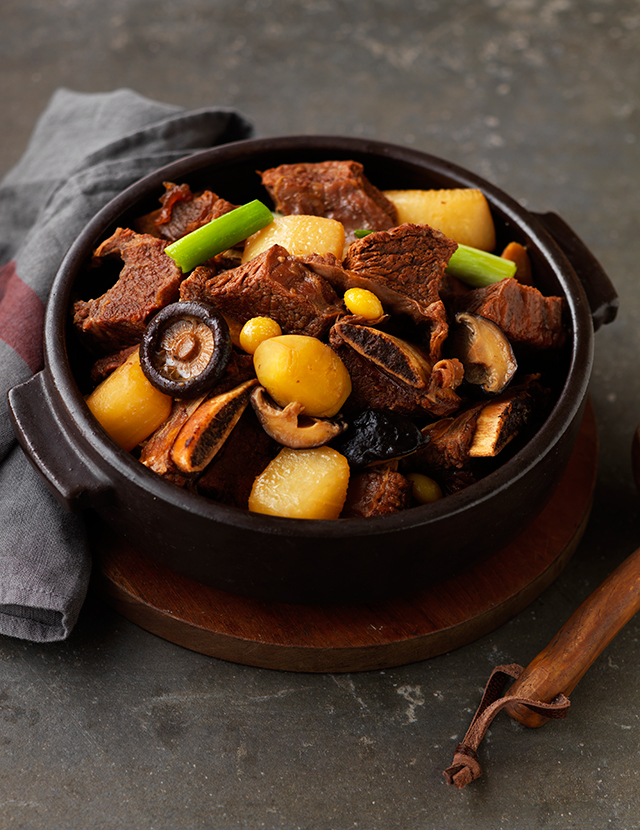

Galbijjim

Description
Galbijjim (kalbijjim) is a Korean traditional braised beef short ribs dish in a rich sauce. You can make these tender, succulent short ribs at home with this easy, authentic recipe!
Ingredients
Beef Galbijjim ingredients
- 2kg beef short ribs
- Water to boil ribs
- 100g radish
- 1/2 (135g) carrot
- 1 (60g) king oyster mushroom
- 6 (120g) shiitake mushroom
- 3 (30g) cheongyang pepper
- 5 (30g) shishito pepper
- 2 (20g) red pepper
- 2 stalks (200g) green onion
- 1 (250g) onion
- 10 cups (1800ml) water
Sauce ingredients
- 1/2 cup (300g) green onion
- 1/2 tbsp (10g) minced ginger
- 2 tbsp (40g) minced garlic
- 1 cup (180ml) thick soy sauce
- 1/2 cup (80g) brown sugar
- 1/2 cup (90) cooking wine
- 4 tbsp (28g) sesame oil
- 1 cup (180ml) water
Steps
- Place ribs in cold water overnight to remove blood.
- Pour enough water to submerge ribs in a pot and put ribs in about 5 to 7 minutes after the water starts boiling.
- Rinse boiled ribs under running water to remove impurities, and place in a draining basket.
- Slice the green onions in 0.3cm thickness for the sauce.
- In a bowl, add thick soy sauce, brown sugar, cooking wine, minced garlic, minced ginger, water, sesame oil, and green onion. Mix it well to make the Galbijjim sauce.
- In a pot, place beef ribs, sauce, and add water.
- Adjust heat and cook for 40 minutes to reduce water.
- Slice onion into large pieces and cut green onion to about 5cm long.
- Slice radish 1.5cm thick and cut it into four pieces. Use a knife or a potato peeler to smoothen the edges.
- Slice carrot 1.5cm thick and use a knife or a potato peeler to smoothen the edges.
- After removing stalks of shiitake mushrooms, cut three of them into four pieces, and cut decorative crosses in remaining mushrooms for garnish.
- Prepare king oyster mushroom into large pieces as if sharpening a pencil.
- Cut each red pepper, cheongyang pepper, and shishito pepper into three pieces.
- After cooking the ribs for 40 minutes, remove excess oil with a ladle. Add radish and onion in and cook for 15 more minutes over medium heat.
- When radish is halfway cooked, add carrots, king oyster mushrooms, and shiitake mushrooms, and cook for 20 minutes.
- Lastly, add in red peppers, cheongyang peppers, shishito peppers, and green onion, and use a rice paddle to mix. Turn off heat and cook using residual heat.
- Plate Galbijjim and enjoy.